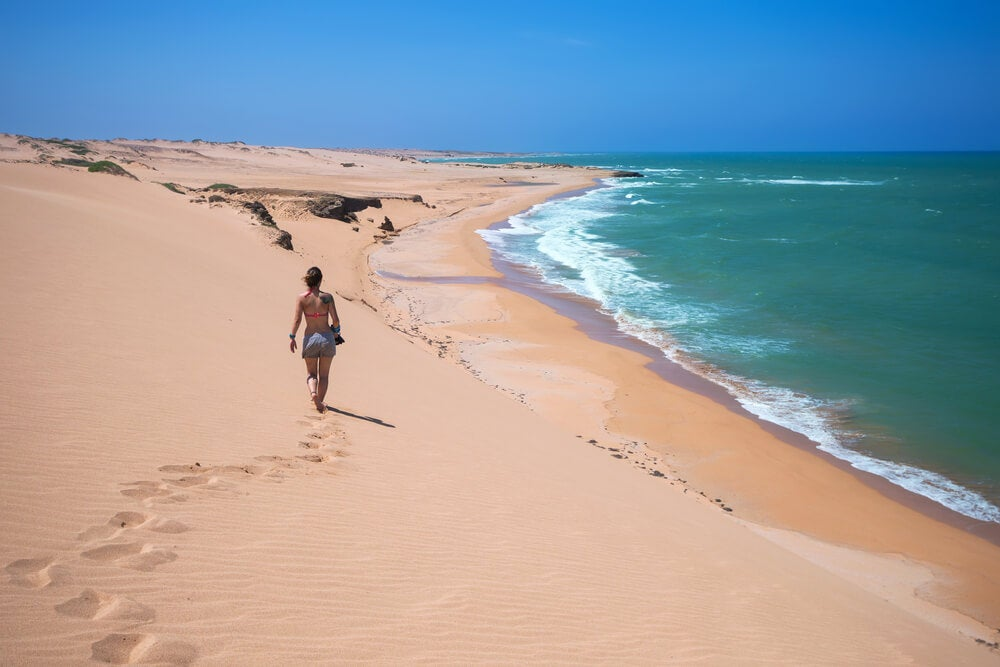
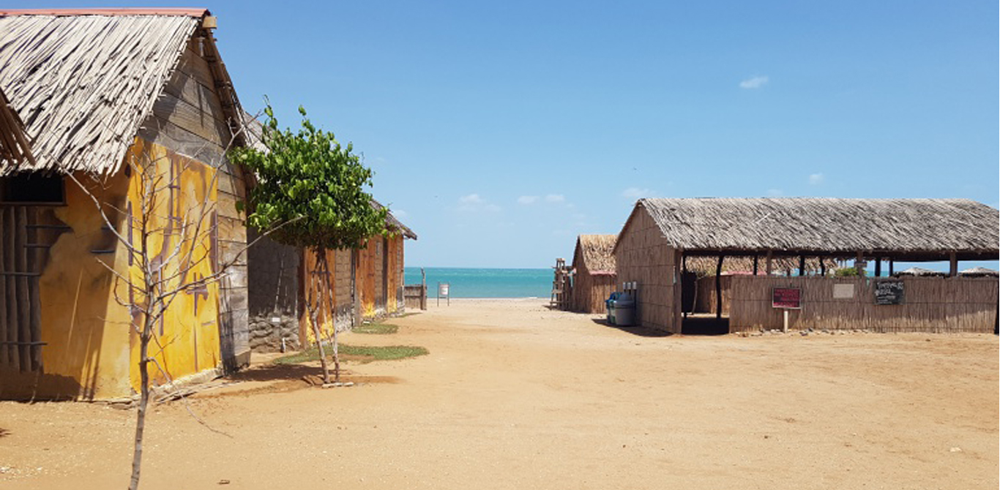
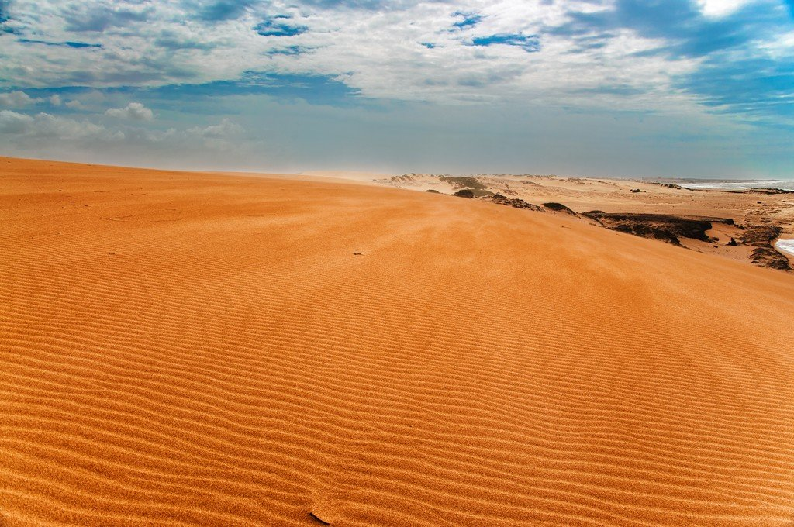
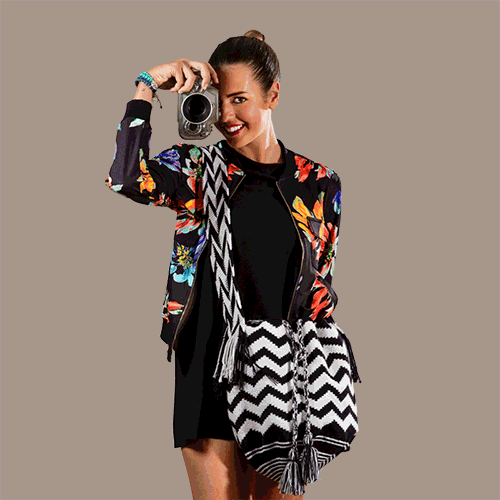

Nuestro trabajo al alcance de tus manos





Nuestra Gente
Los principales representantes de las artesanías de La Guajira, son aquellas elaboradas por los indígenas Wayúu; éstas se componen por tejidos –mochilas y chinchorros- elaborados a base de algodón, que se caracterizan por ser coloridos con diseños decorativos conformados por figuras geométricas que representan todo aquella que forma parte del diario vivir de los Wayúu.
